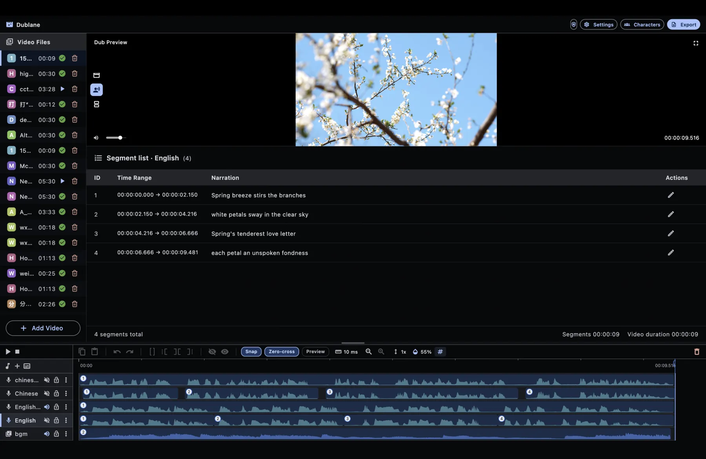
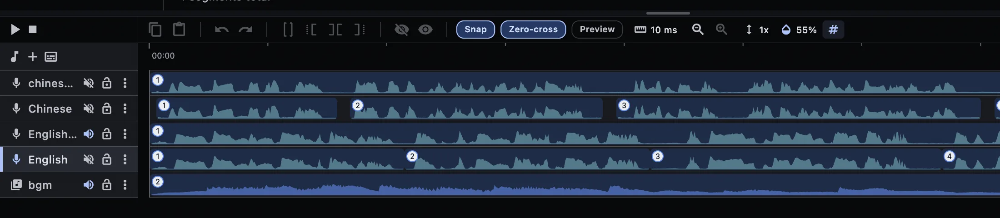

Results
One piece of footage, four ways to deliver it. Every video below was exported on this Mac by Dublane.
For page weight, the cuts on this page are 1080p web versions; the files Dublane exported are 3840 × 2160.
Source material (silent)
3840 × 2160 / 25 fps / 9.52 s, with a digitally silent audio track. All four finished videos above were produced on this Mac by Dublane: the commentary is synthesised speech, the music sits on its own track, and the subtitles come straight from the segment table.
4K source
silent audio track
web edition exported at 1080p
How it was made
Six steps, all inside the Dublane main window.
1
Import the silent video
Click “Add Video” below the video library on the left and pick the 4K cherry-blossom footage. Dublane reads it in place and generates thumbnails, waveforms and the duration.
2
Create a narration track
Press “+” beside the timeline to add a narration track and name it. Like any other track it can be muted, locked and re-levelled.
3
Write the narration
Split the timeline into four segments that follow the picture and write the commentary for each one: “Spring breeze stirs the branches”, “white petals sway in the clear sky”, “Spring’s tenderest love letter”, “each petal an unspoken fondness”.
4
Pick a voice and generate
Open a segment, audition a voice, and generate. The finished dub comes back onto the narration track as a waveform you can drag, trim and nudge.
5
Add a BGM track
Add another track for the music and keep it below the voice across the whole clip. Keeping narration and music apart means editing the script never means redoing the music.
6
Export four videos
Pick “Video” in the export dialog; subtitles can be burned into the video or saved as SRT. Export the Chinese cut with only the Chinese narration track monitored, then mute it, monitor the English track and export again — one project, four deliverables.

How the tracks are set up
Five tracks in one project — the monitor switch on each lane decides who joins the mix.

- Source audio: the audio that came with the footage — silent in this case, muted as a whole so it stays out of the mix
- Chinese (narration track): the star of the case, four commentary segments; monitored while exporting the Chinese cut
- English… (second narration track): the same script in English — monitored for the English export, muted for the Chinese one
- bgm (music track): the bed that runs under the whole clip, kept below the voice and monitored all the time
- Segment-ID dots: switch the “#” button in the toolbar and every clip is tagged with its number, so it maps one-to-one onto the segment table
- Zero-cross: with “Zero-cross” on in the toolbar, trim edges snap to audio zero crossings, so butted segments do not click
Why separate tracks: with narration and BGM apart, changing one line only regenerates that one clip, and re-levelling the music never touches the dub you already made.
Where the subtitles come from
There is no separate subtitle authoring step — the text is already in the segment table.
- Source: the original text, the translation, or both; in this case it is the narration written on the narration track
- Two outputs: burned into the picture (fixed in the cut) or saved as a standalone SRT / ASS file — or both
- Style: size, colour, outline, background and position (bottom / centre / top) are all set in the export window
- Fonts: pick a bundled CJK family, or choose “Add font” in the export window to import your own TTF / OTF / TTC
- WYSIWYG: the preview frame in the export window is rendered at the final output resolution, with the same scaling and letterboxing as the exported file
Where this works
The same setup carries straight over to other content.
Product promos
Travel vlogs
Screen-recorded tutorials
Showroom and property tours
Courses and explainers
Event recaps
Accessibility narrations
One general rule: the picture tells the story, the narration track explains it, the BGM track sets the mood. Keep the three on separate tracks and any one of them can change without redoing the whole cut.